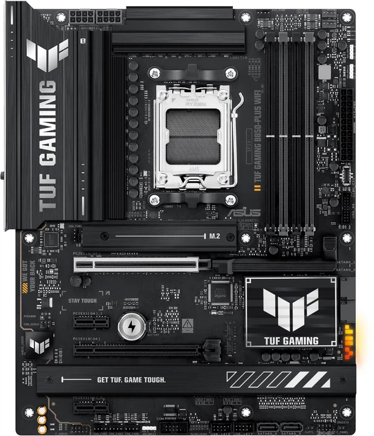
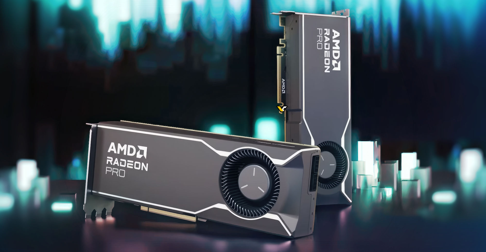
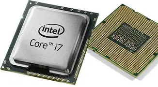

Комп'ютери складаються з багатьох компонентів, які працюють разом як один організм.
Ось як виглядають стилі:
Жирний текст (b) — важливі деталі.
Курсив (i) — назви брендів.
Підкреслений (u) — посилання на ресурси.
Закреслений (s) — старі моделі комплектуючих.



| Модель | Пам'ять (ГБ) | Потужність |
|---|---|---|
| RTX 3060 | 12 | Висока |
| RTX 4070 | 12 | Дуже висока |